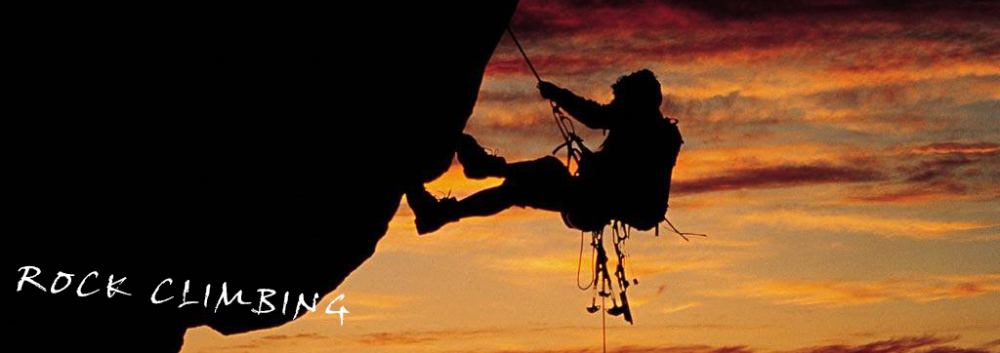

|  |
攀岩是从登山运动中衍生出来的竞技运动项目。50年代起源于前苏联，是军队中作为一项军事训练项目而存在的。1974年列入世界比赛项目。进入80年代，以难度攀登的现代竞技攀登比赛开始兴起并引起广泛的兴趣，1985年在意大利举行了第一次难度攀登比赛。 最早的攀岩者当然是远古的人类，可以想见的是，他们为了躲避猎食者或者是敌人，而在某个危急的时候纵身一跃，从而成就了攀岩这项运动。 而人类最早的攀登记录，是公元1492年法国国王查理三世命令Domp Julian de Beaupre， Captain of Montelimar去攀登一座名为Inaccessible的石灰岩塔，高度为304米。当时他们就带着简单的钩子和梯子，凭着经验和技巧登顶成功。那座山后来被命名为Mt.Aiguille，那次攀登成为历史上第一个有记录并使用装备的攀岩事件。然而之后长达几百年的时间里，历史上一直没有再留下人类新的攀登记录。 一直到了十七世纪中期，人们攀登高山的活动开始重新被记载下来。冰河地形以及雪山成为这些早期登山者主动迎接的挑战，而他们的足迹遍布了阿尔卑斯山区。在1850年的时候，登山者已经发展出一些简单的攀登工具，以帮助他们通过岩壁和一些冰河地形。比如有爪的鞋子和改良过的斧头和木斧，这些都是冰爪和冰斧的前身。 在阿尔卑斯山区，有另外一些人尝试不过多依赖工具，而是运用他们自己的身体来攀登高山。1878年Georg Winkler没使用任何工具成功首攀Vajolet Tower西面。虽然Georg Winkler使用了钩子且鞋子也经过改良，但他仍算是开创了自由攀岩。 |
| 《上一个 | 下一个》 |